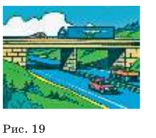
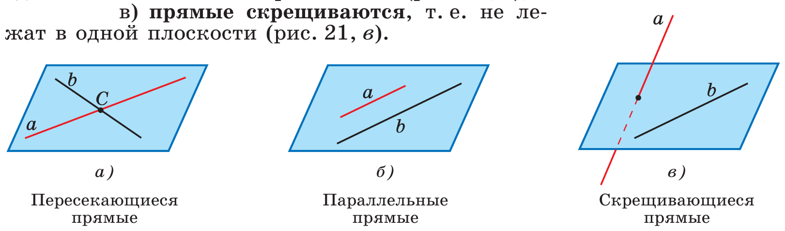
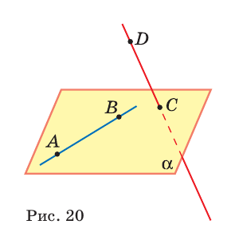
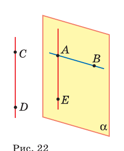
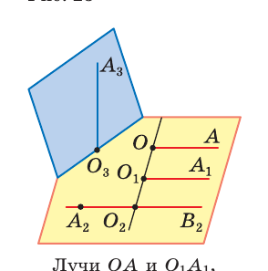
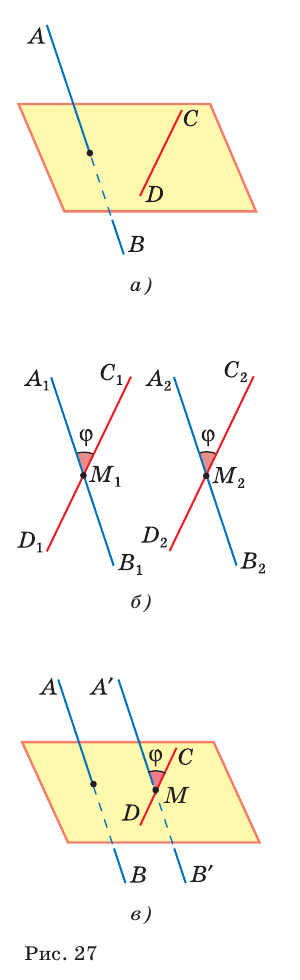
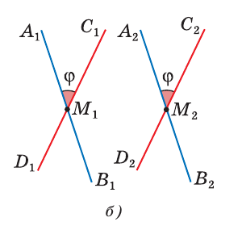

Теория
Третий случай
Если две прямые пересекаются — они лежат в одной плоскости (теорема 2, урок 1). Если параллельны — тоже (по определению). Но в пространстве прямые могут лежать так, что никакая плоскость не проходит через обе сразу.
Две прямые называются скрещивающимися, если они не лежат в одной плоскости.

Проверь сам: возьми два карандаша, один держи горизонтально перед собой, второй — вертикально чуть дальше. Они не пересекаются (сколько их ни продолжай), но и параллельными не являются: через них нельзя провести одну плоскость. Такие пары легко найти в комнате — например, верхний край двери и вертикальный угол стены напротив.

| Случай | Общие точки | Одна плоскость? |
|---|---|---|
| Пересекаются | ровно одна | да |
| Параллельны | ни одной | да |
| Скрещиваются | ни одной | нет |
Главная путаница урока: «не пересекаются ⟹ параллельны». В планиметрии это было верно, потому что все прямые лежали в одной плоскости. В пространстве у непересекающихся прямых есть два варианта, и различает их только вопрос «можно ли провести через них одну плоскость?» Можно — параллельны, нельзя — скрещиваются.
Если одна прямая лежит в плоскости, а другая пересекает эту плоскость в точке, не лежащей на первой прямой, то эти прямые скрещивающиеся.

Допустим противное: прямые AB и CD лежат в одной плоскости β. Тогда β проходит через прямую AB и точку C, не лежащую на ней. Но через прямую и точку вне её плоскость единственна (теорема 1, урок 1), и такая плоскость уже есть — это α. Значит, β = α. Но тогда и прямая CD лежала бы в α, а по условию она её пересекает. Противоречие. ∎
Оговорка «в точке, не лежащей на первой прямой» — не формальность. Если точка C попадёт на прямую AB, прямые AB и CD просто пересекутся в C.
Через каждую из двух скрещивающихся прямых проходит плоскость, параллельная другой прямой, и притом только одна.

Пусть прямые AB и CD скрещиваются. Докажем, что через AB проходит плоскость, параллельная CD, и такая плоскость одна.
Существование. Через точку A проведём прямую AE ∥ CD (теорема о параллельных прямых). Прямые AB и AE пересекаются в A, через них проходит плоскость α (теорема 2, урок 1). Прямая CD в α не лежит — иначе AB и CD лежали бы в одной плоскости и не были бы скрещивающимися. И CD параллельна прямой AE, лежащей в α. По признаку параллельности прямой и плоскости (урок 2) CD ∥ α.
Единственность. Пусть β — другая плоскость, проходящая через AB. Прямая AE в β не лежит (иначе β проходила бы через пересекающиеся прямые AB и AE и совпала бы с α), но имеет с ней общую точку A — значит, пересекает β. По лемме урока 2 параллельная ей прямая CD тоже пересекает β, поэтому β не параллельна CD. ∎
Вернёмся к эстакаде: нижняя дорога лежит в плоскости земли, а эта плоскость параллельна верхней дороге. Теорема говорит, что такая плоскость всегда существует и она одна.
Углы с сонаправленными сторонами
Этот пункт нужен, чтобы корректно определить угол между скрещивающимися прямыми.
Лучи OA и O₁A₁, не лежащие на одной прямой, называются сонаправленными, если они параллельны и лежат в одной полуплоскости с границей OO₁. Проще: они параллельны и «смотрят в одну сторону».

Если стороны двух углов соответственно сонаправлены, то такие углы равны.
Если углы лежат в одной плоскости, это знакомый из планиметрии факт. Пусть углы O и O₁ лежат в разных плоскостях. На сторонах угла O₁ отложим отрезки O₁A₁ = OA и O₁B₁ = OB.
Лучи OA и O₁A₁ сонаправлены, а отрезки OA и O₁A₁ равны. Четырёхугольник с парой равных и параллельных противоположных сторон ⟹ OAA₁O₁ — параллелограмм, значит AA₁ ∥ OO₁ и AA₁ = OO₁. Так же BB₁ ∥ OO₁ и BB₁ = OO₁.
Отсюда AA₁ ∥ BB₁ (теорема о трёх прямых) и AA₁ = BB₁, то есть ABB₁A₁ — параллелограмм, и AB = A₁B₁.
Треугольники AOB и A₁O₁B₁ равны по трём сторонам ⟹ ∠O = ∠O₁. ∎
Угол между прямыми
Вспомним планиметрию: две пересекающиеся прямые образуют четыре угла, и углом между прямыми называют наименьший из них. Поэтому для пересекающихся прямых всегда 0° < φ ≤ 90°. Угол между параллельными прямыми считают равным 0°.
У скрещивающихся прямых общей точки нет, и угол «прямо на месте» не построить. Идея: перенести обе прямые параллельно так, чтобы они пересеклись, — и измерить угол уже между пересекающимися прямыми.
Пусть AB и CD скрещиваются. Возьмём произвольную точку M₁ и проведём через неё A₁B₁ ∥ AB и C₁D₁ ∥ CD. Угол между этими пересекающимися прямыми и называется углом между скрещивающимися прямыми AB и CD.

Почему это определение корректно? Вдруг при другой точке получится другой угол? Возьмём другую точку M₂ и повторим построение. Тогда A₁B₁ ∥ A₂B₂ и C₁D₁ ∥ C₂D₂ (по теореме о трёх прямых). На этих прямых можно выбрать лучи с началами M₁ и M₂ так, чтобы они были попарно сонаправлены. По только что доказанной теореме углы между этими лучами равны. Значит, результат не зависит от выбора точки.
Рабочее правило: точку M удобнее всего брать прямо на одной из прямых — тогда переносить нужно только вторую. На рис. 27, в так и сделано. Например, чтобы найти угол между рёбрами AB и B₁C₁ куба, сдвигаем B₁C₁ вниз — получаем параллельное ему ребро BC; угол между AB и BC — угол квадрата, 90°.

Углы в кубе
Возьмём куб ABCDA₁B₁C₁D₁ и разберём четыре пары прямых. Каждый раз одну прямую оставляем на месте, а вторую заменяем параллельной ей прямой, которая проходит через точку первой.
| Пара прямых | Что переносим | Угол |
|---|---|---|
| AB и B₁C₁ | B₁C₁ → BC | 90° |
| AB и A₁C₁ | A₁C₁ → AC (диагональ грани) | 45° |
| AD₁ и DC₁ | DC₁ → AB₁ (AB₁C₁D: AD ∥ B₁C₁ и AD = B₁C₁, это параллелограмм); треугольник AB₁D₁ составлен из трёх диагоналей равных квадратов, значит, он равносторонний | 60° |
| AB и DB₁ | AB → DC; DB₁ — диагональ куба. Посчитать этот угол поможет глава II (перпендикулярность) | ≈ 54,7° |
Задачи урока
Сначала устно, потом письменно. Решай с обоснованием: на каждый шаг — ссылка на аксиому, теорему или признак.
Тест к уроку
Домашнее задание
Задачи Д1–Д6 ниже. Выучить определение скрещивающихся прямых, признак скрещивающихся прямых с доказательством и определение угла между скрещивающимися прямыми; найти в комнате три пары скрещивающихся прямых.